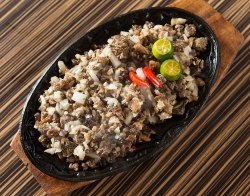
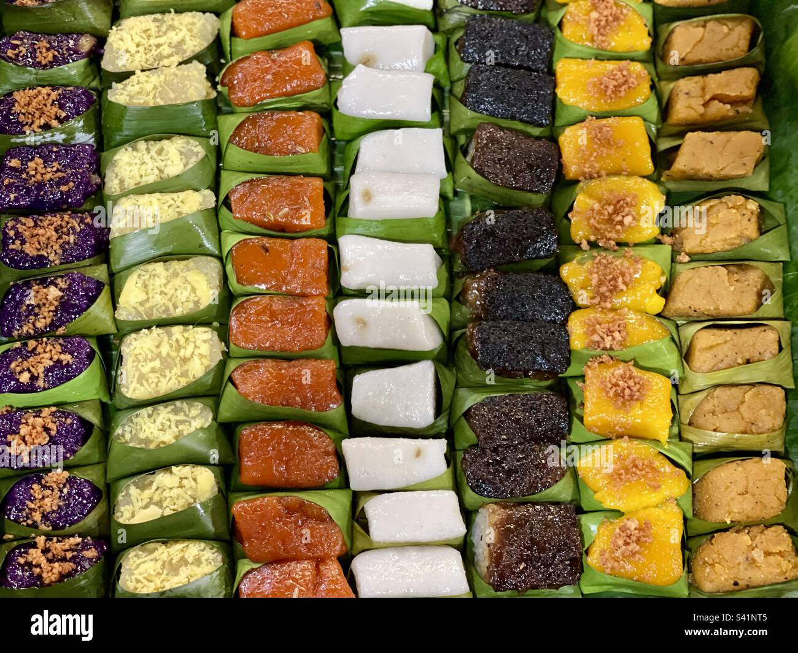
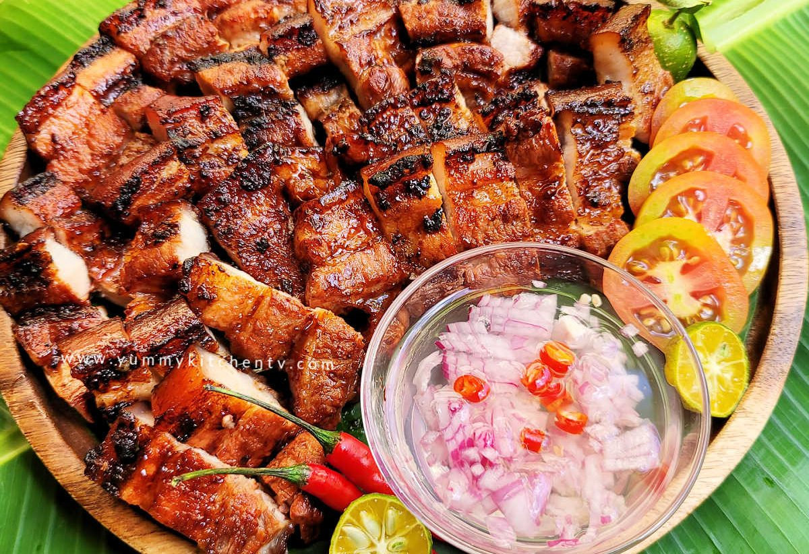

Dessert
Dessert
1. Brazo de Mercedes
Details
- Traditional Filipino pastry.
- Soft meringue roll with sweet custard filling.
- Usually served for celebrations.
Ingredients
Meringue: Egg whites, Sugar, Cream of tartar.
Filling: Egg yolks, Condensed milk, Butter, Vanilla extract.
Steps
- Beat egg whites until fluffy with stiff peaks.
- Bake until golden.
- Cook filling until thick.
- Spread filling, roll, and chill.

Main Dish2. Sisig
Details
- Served on a sizzling hot plate.
- Popular as a main dish or "pulutan".
Ingredients
- Pork (face or belly)
- Onion & Chili
- Calamansi & Mayonnaise
Steps
- Boil pork until tender.
- Grill or fry until crispy.
- Chop, mix ingredients, serve hot.

Snack3. Kakanin
Details
- Common during local fiestas.
- A staple of Filipino food culture.
Ingredients
- Glutinous rice flour
- Coconut milk & Sugar
- Toppings (cheese, salted egg)
Steps
- Mix the base ingredients.
- Pour into traditional molds.
- Steam for 20–30 mins & cool.

Street Food4. Inihaw na Liempo
Details
- Common in night markets around the city.
- Affordable, smoky, and typically eaten with rice.
Ingredients
- Pork belly
- Soy sauce & Calamansi
- Garlic, Brown sugar, Ketchup
Steps
- Mix the marinade ingredients.
- Marinate the pork for at least 1 hour.
- Grill over charcoal until cooked.